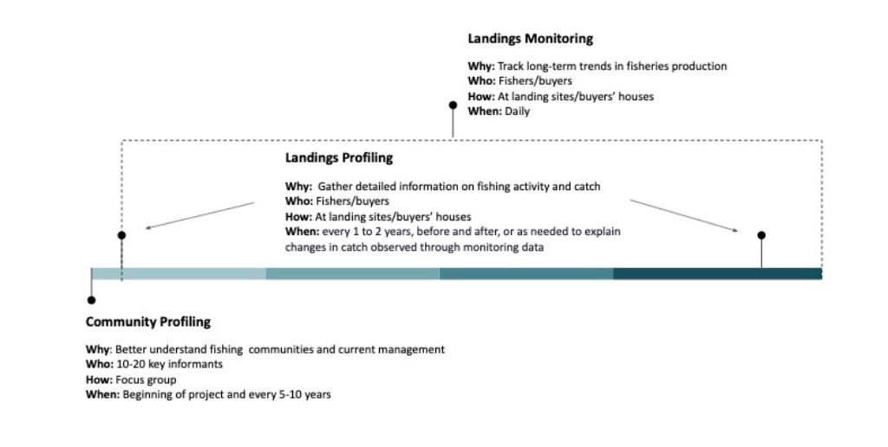

Full Guide for Data Collection
A guide for administering surveys to obtain fisheries data Prepared by Barefoot Ocean, LLC.
Introduction
This document provides guidance and recommendations for administering three survey instruments to capture information about fishing communities and the fisheries they rely on (Figure 1). The surveys were designed to align content with how the data will be used and expected frequency of change. The highest level survey, Community Profiling, contains questions that help to build a better understanding of fishing activity in the community and socioeconomic conditions. Understanding the socioeconomic landscape is especially important when work first begins in a community. The information collected during this survey is essential for designing community engagement strategies and data sampling plans. The Landings Profiling and Monitoring surveys collect data on catch landed by fisheries. The Landings Profiling data is collected less frequently and captures information on fishing habitat, gear type, effort, and length of individual fish. The Landings Monitoring survey, ideally conducted daily, is a rapid fisheries survey collecting the minimum amount of information needed to track catch volume and value changes, such as species, weight, count and price.

Figure 1: Timeline for administering the three different survey instruments on a one year scale.
Survey Details
Community Profiling Survey
Goal
Understand the general landscape of the community and the fisheries operating within the community.
Data Collected
Number of community members, fishers, fish traders, women
General landscape of the fisheries operating within the community
Gears used; species targeted; habitat fished; seasons; vessels
Information on fishing effort and cost
Perceptions on fisheries and habitat conditions, threats
Information on current fisheries management/regulations
Identification (via mapping) of important fishing grounds, habitats, landing sites
Target Audience
10-20 key informants within the community, namely, community leaders, respected fishers, fish traders, and women.
Frequency and Timing
When work begins in a new fishing community, conducting the Community Profiling Survey and the initial profiling exercise provides baseline data and relevant information to design conservation and management efforts most appropriate for the community. Repeating the Community Profiling Survey can help document significant changes occurring over time.
Methodology
Information can be gathered through third-party surveys (i.e, census, fisheries department records, etc), focus groups consisting of 10-20 key community members or key informants. Community leaders as well as a variety of knowledgeable and diverse fishers and fish traders (including women and young people) would be the ideal participants to include in the focus group. In facilitating the focus groups, it is recommended to have, at a minimum, a facilitator and a note-taker. At the focus group, it is also recommended to have participants provide a list of/contact information for fishers in the community who can then be contacted to administer the Household Surveys.If it is not possible to carry out the Community Profiling Survey in a focus group format, an alternative is to administer the same questions as individual surveys with key informants and pool the responses. Questions included in the community profiling survey and recommendations for conducting focus group discussions can be found here).
Landings Monitoring Survey
Goal
Capture key data needed to calculate simple length-based indicators of fishery health and to track changes in fisheries production, value, and composition.
Data Collected
Date landed
Landing location
Fish trader name
Fisher name
Fishing Effort (days fishing/gleaning)
Species identity (local, common, scientific names)
Total count
Total weight
Total price
Reason total catch not sold, if applicable
Target Audience
Fishers as they land their catch or at a fish buyers’ house/market.
Frequency and Timing
The Landings Monitoring Survey should be conducted daily or as often as possible.
Perform Landings Monitoring Surveys before and after implementation to evaluate the effects of fisheries closures or other management strategies.
We recommend collecting data 30 days before and after temporary closure periods. For the first seven days of the sampling periods, we recommend that enumerators conduct Landings Monitoring Surveys daily. If possible, continue daily monitoring for the entire 30-day period. If this is not possible, survey at least 80% of days within each 30 days. We also recommend surveying 80% or more of all fishers landing catch on a particular day pre or post-closure. Distribute representative survey efforts between boat fishers and non-boat fishers. Collect data from all fishers landing in the village, regardless of whether or not they were fishing within the closure site.
For longer-term closures, ensure that data is collected during the same month for each year to capture change over the closure period. If that is not feasible, we recommend gathering data during the same month before and after the closure. As stated above, we recommend surveying at least 80% of the day within the month and 80% of fishers landing catch on each day.
Methodology
Using the Kobo form, meet fishers at landing sites/buyers’ houses to record their catch.
Landings Profiling Survey
Goal
Understand observed catch trends.
Data Collected
Date landed
Landing location
Primary fishing ground
Fish trader name
Fisher name
Fishing Effort (hours and days fishing/gleaning)
Vessel type (boat registration number, number crew)
Species identity (local, common, scientific names)
Gears used
Habitat fished
Total count
Total weight
Total price
Reason total catch not sold, if applicable
Samples of individual weights and lengths (Figures 2, 3, 4, and 5)
Partner-specific sample data (sex, catch quality, gonads, stylet, # traps, etc.)
Target Audience
A representative sample of catch within the community. Record at least 50 samples (ideally 100) for each target species, representing various gear types and fisher profiles.
Frequency and Timing
This survey should initially be conducted at the beginning of involvement in a community and subsequently performed every one to two years, before and after implementing the management strategy, or as needed to explain declines observed through monitoring data.
Format
Using the Kobo form, meet fishers at landing sites to sample their catch and record their fishing activity.
Measurement Standardization (Length type per species group)
Data Flow Overview
Barefoot Ocean processes and analyzes key fisheries and socioeconomic data owned by partnering organizations through data sharing. In other words, partners own the data, and Barefoot Ocean processes it. Data collection, validation, transformation, and visualization are the four major components of the Barefoot Ocean data system. The primary software applications used are KoboToolBox, Smartsheet, PostgreSQL, and R.
KoboToolBox is a free and open-source software that is a powerful toolkit for data collection accessible through challenging environments and multiple platforms, such as mobile devices, computers, and paper. Enumerators collect data on socioeconomic and ecological conditions essential to assess fishery communities and statuses through the Barefoot Ocean KoboToolBox survey questionnaires. Smartsheet is a collaborative work management platform that provides a flexible and intuitive interface for organizations to plan, track, automate, and manage various projects and processes in real-time. Reference files that are used to populate survey forms and connect additional data to the master datasets are managed in Smartsheet. Additionally, data is validated in Smartsheet. PostgreSQL is a free and open-source database management system used as a data warehouse for numerous web, analytics, and geospatial applications while storing unstructured and structured data in a single product. R is a free and open-source software environment and programming language widely used for data science, statistical computing, and data visualization. Data dashboards are built using the Shiny package from the R programming language and hosted on shinyapps.io, a platform as a service (PaaS) for hosting Shiny web apps (applications).

Figure X: Barefoot Ocean Data Flow diagram.
Data collection involves systematically collecting and measuring information from relevant sources on variables of interest for decision-making, strategic planning, outcome evaluations, and other purposes. By incorporating quantitative and qualitative data in the survey questionnaires, Barefoot Ocean focuses on mixed-method surveys in the data collection process to develop a more in-depth understanding of the socioeconomic and ecological conditions pertinent to fishery communities and adaptive management strategies. Data validation refers to applying methods to measure the conditions of the collected data and determine whether the collected data meets the defined quality criteria, such as accuracy, consistency, relevancy, completeness, and uniqueness. Data transformation converts, cleans, and structures raw data into a usable format that can be analyzed and assessed for decision-making. Data analysis and visualization involves designing and creating accessible graphics or visual displays of information to effectively communicate the complex qualitative and quantitative data previously collected, verified, and transformed across target audiences. We have described the data flow process below:
Data is collected through KoboToolBox survey forms.
Data is pulled into the Barefoot Ocean database.
If the enumerator selected pre-populated answer choices in surveys, the data does not need to be validated and can directly go through to the data analysis and visualization process.
If the enumerator manually enters data such as a new fisher, buyer, data collector, landing site, or species, the data is verified in Smartsheet before being included in the final data table and visualized in the dashboard. Field team leads are notified via email when data is ready for validation. Team leads will manually check the quality control tables to confirm that the newly added information is valid.
After validation, new data is pushed to both the reference files and back to the database for final transformation before analysis and visualization.
Once data is pushed to the reference files, team leads will be notified via email if any additional information is needed in the reference files.
Updated reference files are then uploaded to the KoboToolBox platform for inclusion in the forms.
Updated data from the reference files are also used in the data transformation process to join additional data fields such as coordinates and gender.
The final steps of the data transformation process results in master data tables that are used for data analysis and visualization in the data dashboards.
Data dashboards (i.e. Shiny apps) connect directly to the database, pulling the most up-to-date data available, thereby providing partners near immediate access to raw and summarized data.
Data Security
Below is a list of software platforms where data may be stored and moved in transit from the database. Data security information for each external platform is available on the platform-specific website linked here.
Smartsheet(whitepaper on security is located here)
Barefoot Ocean has implemented several data security procedures in addition to the data security measures provided by the above software platforms. All accounts on all software platforms used by Barefoot Ocean are password protected.
We use Github as our version control system for coded products. By default, all folders and projects with fisheries and socioeconomic data are private and only accessible to Barefoot Ocean staff and contractors.
From any shared data platforms (e.g. Shiny Apps), user authentication is required for viewing or downloading data, depending on the data sharing agreement chosen by each partner organization. This includes verification of users before allowing data to be viewed or downloaded, users logging into data visualization platforms, and regular management of verified users by the Barefoot Ocean team.
Access to Smartsheet documents (e.g. reference files, data validation sheets) is restricted to personnel identified by each organization, and each partner may only view their own partner-specific information. Exceptions to this include Barefoot Ocean staff who control and assist with data quality workflows, and Blue Ventures staff assisting partners with information workflows in Smartsheet.
Access to Barefoot Ocean’s main database is limited to Barefoot Ocean staff and contractors.
Data Privacy
Personal identifiable information (PII) and fisheries catch data is owned by fishers and fish buyers and will never be shared without prior consent. To protect the privacy of fisher, buyers, and data collectors, all names are anonymized into random identification numbers. Therefore, all partially or fully publicly available data will only include the random, numeric id numbers. See the section on data sharing for a full explanation of data sharing agreements.
Data considered to be PII includes:
Names of fishers, buyers, and data collectors
Names of respondents for any surveys
Data Sharing
The Barefoot Ocean fisheries data system is designed to streamline the utilization of your data and provide a platform for your active engagement in broader fisheries management and conservation efforts. Aggregated data collected collaboratively across partners can yield powerful insights for monitoring the fishery, assessing management strategies, guiding decision-making at both local and national levels, understanding regional changes, and identifying potential financial services.
We recognize the critical importance of data ownership and usage for all contributing partners. Our goal is to provide you with flexibility in managing and determining how your data is used. By selecting one of the three data use permission levels, you can regulate the extent to which your data is shared with other users. You can tailor permission levels based on data types, and importantly, you have the freedom to adjust your data permission level at any time. Personal identifiable information (PII) and fisheries catch data is owned by fishers and fish buyers and will never be shared without prior consent. By choosing a data use permission level, you are confirming that individual permissions have been obtained from both fishers and fish buyers.
All data is currently set to Level 1 - Private. Users will have the opportunity to adjust their permission levels as needed.
Level 1- Private
The data is strictly for the internal purposes of the original data contributor.
Data will be available for download by the original data contributor.
Data will not be included in regional analyses provided on the dashboard.
Unauthorized sharing or distribution of the data to external parties is strictly prohibited.
Level 2 - Share with Other Data Contributors
Trip level data is available for other data contributors to download.
Data summaries and visualizations will be available for other data contributors.
Data will be included in regional analyses on the dashboard.
Level 3 - Share with All Users
Trip level data is available for all users to download.
Data summaries and visualizations will be available for all users.
Data will be included in regional analyses on the dashboard.
The original data contributor may specify any usage limitations or conditions applicable to all users.
Validating New and Flagged Data
In the surveys, some questions allow enumerators to add a new fisher, buyer, data collector, landing site, species, or “other.” Information from these options are new data points and must undergo verification before being pushed to the final dataset, visualized in the dashboard, and added to the reference files. There are also constraints set on weight, price and length of a species, and if the data collected is below or above these constraints, these values are flagged for review. Constraints on weight and price are set by partners in the min_max_ref. Species length constraints are set by the Barefoot Ocean team using biological parameters.
All data that flows through the fisheries data system is validated in Smartsheet. Any of these new or flagged entries are sent to the quality control (QA) table in Smartsheet for field teams to validate. The quality control tables are partner-specific and can be accessed via update requests sent to your email or by visiting the Dynamic View links provided to you. Field team leads will be notified via email when data needs to be validated in the QA tables. Once the data have been verified in the QA tables, we will append new information to the reference file and provide necessary corrections to the master dataset.
Specific, step-by-step instructions for how to complete data validation in Smartsheet can be found here.
Data Collection
Barefoot Ocean administers all surveys through Kobo Toolbox forms shareable through a Kobo Toolbox account. You can set up an account here. Please reach out to courtney@barefootocean.org with the account details. Once the surveys are shared, access the Kobo forms through the KoboCollect free Android mobile phone app or via the Enketo web form. Detailed instructions on setting up a Kobo account, collecting data, and submitting data can be found here. Use a QR code to configure all devices after manually setting up the first phone or tablet to set up multiple phones or tablets under one data collection account. Manual setup of the first device requires the Kobo server URL, username, and password. The Kobo server URL is https://kc.kobotoolbox.org. More information on setting up data collection with Kobo, including how to configure multiple data collection devices via a QR code, can be found here.
Once you have downloaded KoboCollect, open the app and enter the server URL, username, and password to connect your KoboCollect app to the KoboToolbox server. Connecting the KoboCollect app to the KoboToolbox server allows you to download deployed forms from KoboToolbox to your mobile device and send data collected through the app back to the server. On the home screen, select “Get Blank Form.” A list of all your deployed survey forms should appear. Press “Select All” to have all the survey forms sent to the app, or select the ones you wish to have by selecting them manually. Then click “Get Selected.” To deploy the survey, select “Fill Blank Form.”
While the webform is automatically updated when a new survey version is available, users must configure “auto-update” themselves in the app. Regularly updating the surveys in the app ensures using the latest version of the form and not causing data pipeline issues down the line. You can set up auto-update in the app by going to “Settings” and “Form Management.” More information on automatically updating surveys in the app can be found here, under the section “Form Management Setting in KoboCollect.” It is important to note that a connection is required for the app to pull the most recent survey version, even with auto-update settings turned on. Therefore, advise enumerators to have an internet connection before performing field work so KoboCollect can pull the most recent version.
After collecting data, the surveys submitted via the web form will be automatically submitted to the server once the data collector hits the “Submit” button. Data collected via the KoboCollect app is first saved in the app in a holding place and then pushed to the server. Completed surveys remain on hold before submitting to the server so that data collectors can make survey edits after collecting data, or if there is no internet connection, the app can save the surveys and then push the surveys to the server once there is internet connectivity. Specifically, when the survey is complete, the user will hit “Save form and exit,” ensuring that “Mark form as finalized” is also checked. “Edit Saved Form” automatically stores the saved form. The data collector can make necessary changes and select “Save Form and Exit.” The home screen also has a button called “Send Finalized Form.” Press Select All (or select the ones you wish to upload) and then press “Send Selected.” Select “View Sent Form” to ensure successfully uploading the forms and you should now be able to view all the submitted forms.
A central data storage system links to the Kobo data, and automated analyses and visualizations will be available through a standardized dashboard. Raw data is backed up in the KoboToolbox database and will be available through download or direct link to another database or data warehouse.
Translations
Translations for all languages are completed by editing the translations in Smartsheet. If you find that a translation needs updating or is wrong in the surveys, please directly update the translations Smartsheet file under the appropriate survey tab. If the Barefoot team needs new translations, they will comment and assign the task to the country team lead.
Reference Files
The reference files are partner or country-specific and contain comprehensive information on the administrative levels of the fishing communities (country, province, district, village), landing sites, fishers, buyers, data collectors, species data, management areas, habitat types, gear types, and partnering organizations. Some information populates the dropdown lists in the surveys, and some are joined to the master dataset after data is collected. New information should be added directly to the reference sheets.
Specific, step-by-step instructions for how to update reference files in Smartsheet can be found here.
Appendix A: Focus Group Discussion Guide
Important considerations before conducting fisheries profiling or surveys
Relationship and trust
Building relationships and gaining trust from the community is an important initial step before asking about fisheries information. The first step to building relationships and gaining community trust is introducing yourself, your organization, and the purpose of conducting fisheries profiling.
Preparation
Preparation is important in conducting each survey method, as good preparation will give you confidence in the effectiveness of each method you apply.
Time for collecting information
Adjust the time of conducting each method to the time of the prospective respondent or targeted community group.
Respondent
Understanding the potential respondents you will meet during the fisheries profiling is crucial to conducting surveys. Groups or individuals who will be in the survey should receive prior notification. Therefore, introducing influential community leaders must be part of the pre-survey work.
Logistics
Each method has logistic and material needs. Make sure that the resources and equipment needed for each method of fisheries profiling have been prepared.
Key person contact list
Save a key person contact list on your phone and also have a printed version for back up.
Health and safety
Make sure that you are in a good condition to conduct fisheries profiling. Bring an essential first aid kit.
Focus Group Discussion Guidance
The following contains guidance and recommendations on conducting a focus group to capture community profiling information. Holding a focus group session is recommended to encourage dialogue, capture a diversity of opinions, and begin building relationships with important community members. However, in the case that a focus group is not feasible, the community profiling survey can be conducted as individual interviews with important stakeholders using the “Community Profiling Survey” Kobo form. Overall, the goal of the community profiling exercise, whether in a focus group or individual interview format, is to understand the general landscape of the community and the fisheries operating within the community.
Prior to conducting a focus group
Before hosting a formal fisheries profiling focus group, it is recommended to conduct informal conversations and participant observation. This method means spending time, building relationships, and understanding the fishery using informal conversation and participant observation.
Informal conversation is important to better understand the general fisheries context before conducting a focus group discussion. Use this method as one of the starting points to formulate the content of the focus group discussion. This method will allow you to get to know the fisheries community, to start building relationships, and to gain trust.
Recommended tips to conduct informal conversations:
Respect cultural differences. Observe social norms such as acceptable greetings, dress codes, and respect religious practices. Be polite, humble, and listen to stakeholder opinions without imposing your own. Staying within a community, building a rapport, and sharing meals can help to build trust.
Spend time with stakeholders. There is no shortcut to gaining trust and support. Especially within communities it is good to be seen, spend time in the villages and meet people. Be prepared to discuss the broader issues within the community. Do not try to push one particular agenda.
Use the local language if possible, unless a common language is accessible. Otherwise, use an interpreter. Be mindful of errors in translation. Cross checking translation between more than one interpreter can help reduce misinterpretation.
Do not make promises that cannot be kept. Be clear on objectives and expected outcomes without raising expectations. This is important to emphasize early on so that communities have a clear understanding on the role of the technical partner, i.e. to facilitate the octopus fishery closure, not to dig wells or repair schools. It is important to ensure everyone is aware of what the organization can and cannot do within the community. Ensuring realistic expectations helps to minimize disappointment, complaints, and conflicts as the project progresses.
Communicate plans and activities widely. Ensure any meetings or activities are planned in advance and at mutually agreeable times and locations to maximize attendance. Ensure any changes in plans and activities are communicated as early as possible. Being on time and sticking to agreements helps to build trust and confidence between stakeholders.
Always acknowledge stakeholders in project outputs such as reports and media releases within stakeholder meetings and external presentations. Be aware of information ‘ownership’ and respect confidentiality and privacy.
Better understanding the stakeholder landscape in the community is a crucial goal in conducting informal conservations and participant observation. Stakeholders affect or can be affected by an organization’s actions. Their support is essential for an organization’s success in implementing fisheries management plans. By better understanding stakeholders, you will effectively identify stakeholders involved in future fisheries monitoring for fisheries management in their area.
Examples of types of stakeholders to include:
Fishers
Head of village
Faith/religious leaders
Head of district
Community health worker/health practitioner
Village buyer/supplier
Processing plant
Women in the village/fishers’ wives
Information to be collected about stakeholders:
- Information about key stakeholders and their positions in relation to an entity’s objectives (degree of support, power, etc.). This information can be used to identify which stakeholders to include in the community profiling focus group.
After conducting informal conversations, the next step you can do is participant observation. Observation is a method that allows you to use the events around you to gather clues and generate conclusions about specific locales or experiences by observing a day in the fishing village. This method is necessary to gather evidence from the information provided in informal conversations. This method allows you to understand the fishing village’s daily life activities.
Focus Group Procedures
- Organizing the focus group
It is important to maintain good relationships with target communities. Therefore, wherever possible villages should be informed of the programme for the focus group meeting at least two weeks in advance.
If the village has mobile phone reception, call the head of the village or other local contact(s).
If the village does not have mobile phone reception, conduct a visit to the village to meet with the head of village or other local contact(s).
During this phone call or visit with the village president or other local contact(s), explain the following:
Aim of the meeting
Location of the meeting
Date and time of the meeting
Method of informing participants of the meeting
Number of participants
All villagers or special people based on best fishers (2)
Most frequent fishers (2)
Fishers that frequent many different fishing sites (2)
Well-respected fishers preferably with experience in mapping (2)
Women - check with the head of the village if the focus group can take place with both sexes present together in advance as in some areas, this is not always possible.
Try to avoid conducting the meeting(s) during spring tides/high fishing season, as many of the required fishers will likely be busy fishing.
Be sure to check schedules of other projects that might be working in the same area at the same time to avoid clashes.
- Focus group team
The following are the recommended roles for the team leading the focus group. At a minimum, a focus group should have a facilitator and a note-taker.
Lead facilitator: Leads and moderates the meeting
Introduces the meeting
Facilitates the event
Moderates the process
Acts as a catalyst between the individuals of the group
Finds ways of integrating dominant and quiet people and makes sure that all group members are able to express their opinions
Makes sure that the group keeps to the topic but is also flexible in handling additional important information
Repeats in own words what people say in order to confirm that there is a good understanding of the discussion
Takes care of time management
Facilitator Assistant: Assists the lead facilitator, especially in displaying visual aids
Supports the note-taker in gathering all relevant information
Leads the displaying of visual aids and assists with other interactive components of the meeting such as tallying votes, taking notes that are displayed, passing out materials, etc.
Brings along the necessary material
Assists the facilitator in an indirect way by giving signs (e.g., pointing out those who wish to speak).
Supports the facilitator directly by asking questions, if the situation requires it.
Note-taker: Documents the meeting
Observes the event from the background
Captures all responses. It is helpful to have the question list printed so it can be annotated with notes during the meeting.
Writes down all important information
Notes who is talking. Is there an equal participation of all or do some people dominate the process? Do women talk?
- Focus group participants
Carefully plan who to invite to the focus group meeting. Identifying 10-12 individuals is recommended to ensure the size is manageable, allowing for adequate representation of different perspectives. As much as possible, include representatives from diverse stakeholder groups and community sectors (see examples of types of stakeholders in the section above). When selecting participants, account for their knowledge and roles in the community. Inviting people more knowledgeable about the fisheries and the community, such as a full-time fisher rather than an occasional recreational fisher, will provide more robust and accurate information. Identifying and inviting people who are well-respected in the community helps build trust.
- Discussion logistics and methodology
Data can be captured in the “Community Profiling Survey” Kobo form. However, it may be easier for the note-taker to capture the data via written notes in order to more easily capture nuances and information that arise from the group discussion, such as differing answers per respondent. If the information is collected by taking notes. After the focus group meeting has been completed, the responses should be entered into the “Community Profiling Survey” Kobo form.
Encourage all members of the group to speak as they represent a mixture of ages and social standings that may have different experiences of the fishery.
Posing questions one by one to the group and waiting for volunteers to respond is one approach to leading a discussion. However, varying how the facilitator solicits responses can help keep the discussion interesting and also ensure that all voices are heard and less vocal participants are able to participate. Prior to beginning the focus group, think through how you would like to elicit responses for each planned question.
Open forum – Anyone can respond to the question and speak.
Call on specific participants – This can help ensure that less vocal participants are given a chance to speak. This can be used later in the discussion once the facilitator has a sense of which participants may benefit from being called on. Alternatively, a facilitator may use this technique when they know a certain participant has important knowledge or information related to a question.
Quick response – Go in a circle and each person very briefly shares their opinion/response to the question. This can be effective in polling the audience as it involves everyone. However, be sure to clearly communicate and enforce time limits or this method can end up draining too much discussion time.
Vote – Poll the audience by asking a question and having people raise their hand in accordance with different response options. This can be done openly or anonymously with eyes closed or with people writing their responses on folded pieces of paper that are then collected.
Groups – Split the group into smaller groups who discuss and report back to the main group. This technique is especially helpful with large groups when there is not enough time for all group members to participate in the full group forum. In this situation, make sure that each group has stakeholders representing different opinions and perspectives.
Focus Group Questions
Begin the focus group by introducing yourself, the project, and the goal of the meeting. Then, have everyone in the room introduce themselves. Plan the best methods for each question to elicit and collect responses beforehand (see section above for ideas). Please see the Community Profiling Survey document for the full list of focus group questions to walk through.
Facilitation Resources
Facilitator Core Competencies – International Association of Facilitators (IAF)
Facilitator’s Meeting Checklist – Social Transformation Project, Tools for Transformation
Introduction to Planning and Facilitating Effective Meetings – Social Science Tools for Social Programs, NOAA Coastal Services Center
Group Facilitation and Problem-Solving – Community Tool Box, Center for Community Health and Development at the University of Kansas
Section 1:Conducting Effective Meetings
Section 2:Developing Facilitation Skills
Section 3:Capturing What People Say: Tips for Recording a Meeting
Section 4:Techniques for Leading Group Discussions
Appendix B: Links
-
Fisheries Dashboard Interpretation Guide (in progress)
Quick Guide - Fisheries Data Collection Guidance
Full Guide - Fisheries Data Collection Guidance
KoboCollect Setup Guidance
Introduction to Smartsheet
Smartsheet Data Validation Guide
Smartsheet Ref Sheet Instructions
Household Survey Guidance
Fisheries Dashboard
Household Survey Dashboard